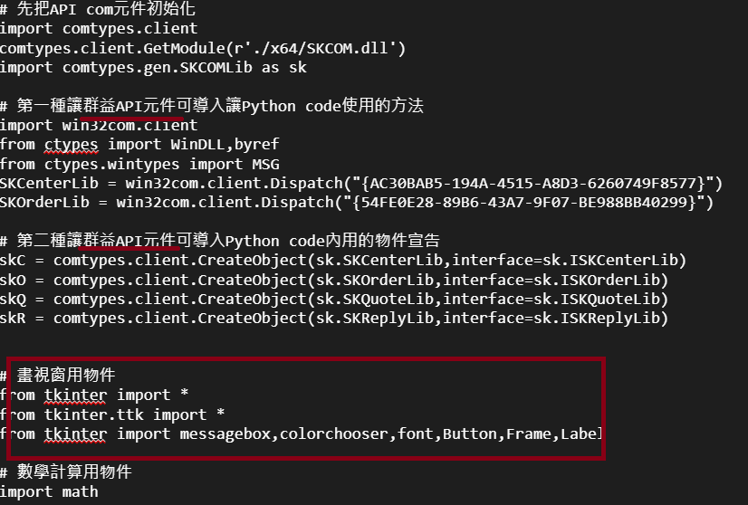

券商交易軟體開發如何應對 3.13 移除 GIL 的未來 — 以 Tkinter 為例

當在使用 Python 開發交易軟體時，你會在兩個方面發生並行1：
- 執行交易相關的運算，並行運算可以更快算完，避免交易決策執行的延遲
- 交易介面的並行監聽，同時監聽有人點了視窗 A 的 "買進" 與視窗 B 調整買進數量的按鈕
Python 預計 3.13 開始可能會移除 GIL，而這將會對交易軟體的使用行為產生決定性的影響2
尤其是許多券商的 API 教學都是以 Tkinter 作為範例

Python 的全局解釋鎖 GIL 與移除的未來
具有全局解釋鎖 (GIL3) 的 Python, 確保了同時只會有一個 Python 程式行為
能被Python 理解並具體執行，而這就大大影響了效能
因為並行的事件就得排隊執行，然而移除 GIL 的確就能大幅度提升效能
但是也反過來會有並行處理的風險，如果有人同時點了買進與調整買進數量的按鈕
到底他是要買調整過後數量還是調整前？移除 GIL 的話，Python 可能不再保證誰先誰後
因此無論開發交易軟體的前端介面或後台運算，都需要思考 GIL 可能帶來的影響
目前移除 GIL 的方向
目前移除 GIL 應該會採用 Sam Gross 的 3.9-nogil4 (含意: No GIL) 版本，有幾個重要方向：
- 偏差計數：單線程的物件的計數，與多線程物件的計數處理方式將會分開
- 永生化：當物件的計數為零時，物件就被刪除、記憶體就釋放 一些常用的東西可能永遠不刪除，例如
True,False,None - 延遲引用計數：某些東西的引用計數會被推遲，例如 Module 中的頂層函數5
- Thread-safe 的記憶體分配方式
還有很多其他改進，但以上是較為重要的方向。
總之，越是依賴 GIL 並造成侷限的套件，越有可能因為移除 GIL 而出問題（也可能被解放）。
以交易軟體開發常用框架 Tkinter 為例
首先最大的挑戰，會在於交易軟體中使用的第三方框架與套件，是否安全的支持 No-GIL
例如 GUI 開發的 Tkinter，就依賴 GIL 完成：
某種程度來說，No-GIL 會釋放 Tkinter 的限制，但是 Tkinter 是否能良好支援？
Tcl/Tk 是有能特別支持不可多線程的版本，因此 Tkinter 會直接從 Python 起始的 thread
調用底層的 library，GIL 會確保只有一次調用。
如果移除了 GIL，那就要使用 Tcl/Tk 可支持多線程的版本，那 Tkinter 就需要做很大的調整
是否要保留 mainloop 的設計，並只允許一個 Tk 實例呢？
這些都值得在繼續留意，在此只以這為一個例子。
不過至少券商交易 API 通常都沒有主動建立 Event Loop，No-GIL 絕對是好事
我是沒有用 Tkinter 用別的，但是交易軟體對於操作的精確性是要求很高的，因此前端介面
跨視窗的並發需求要好好處理。
小結
當然不只有 Tkinter，尤其是交易軟體中使用到的套件，涉及到作業系統底層的交互與運算。
個人陋見來看，整體交易軟體架構的設計與技術選型，從一開始就要特別考慮這些問題
倘若依賴框架，現在就需要特別去關心這樣的問題。
Footnotes
1 關於並行運算，請見
https://zh.wikipedia.org/zh-tw/%E5%B9%B6%E5%8F%91%E8%AE%A1%E7%AE%97
2 移除 GIL 請見 PEP-703 https://peps.python.org/pep-0703/
3 關於全局解釋鎖，請見
https://zh.wikipedia.org/wiki/%E5%85%A8%E5%B1%80%E8%A7%A3%E9%87%8A%E5%99%A8%E9%94%81
4 3.9-nogil 文件請見 Google Docs
https://docs.google.com/document/d/18CXhDb1ygxg-YXNBJNzfzZsDFosB5e6BfnXLlejd9l0/edit?xtrhist=true#heading=h.kcngwrty1lv
5 不是頂層函數的函數就例如: 函數的函數, 類的方法函數 … 等
6 見 O'Reilly 的 Tkinter GUI Application Development Blueprints - Second Edition:
https://www.oreilly.com/library/view/tkinter-gui-application/9781788837460/36084602-c501-4eac-a407-ebc99c510d33.xhtml
7 https://docs.python.org/zh-tw/3.10/library/tkinter.html#threading-model